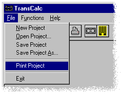

Step 10
Step 10Getting Started
Step 9
Printing
To print a previously saved project, first open that project with the Open Project command or button and select the Print Project command from the File menu, or press the Print Project BUTTON on the TOOL BAR.

If you also wish to print the E01 resistor cut diagram or any part of a project, you must press the Print BUTTON on that particular page.